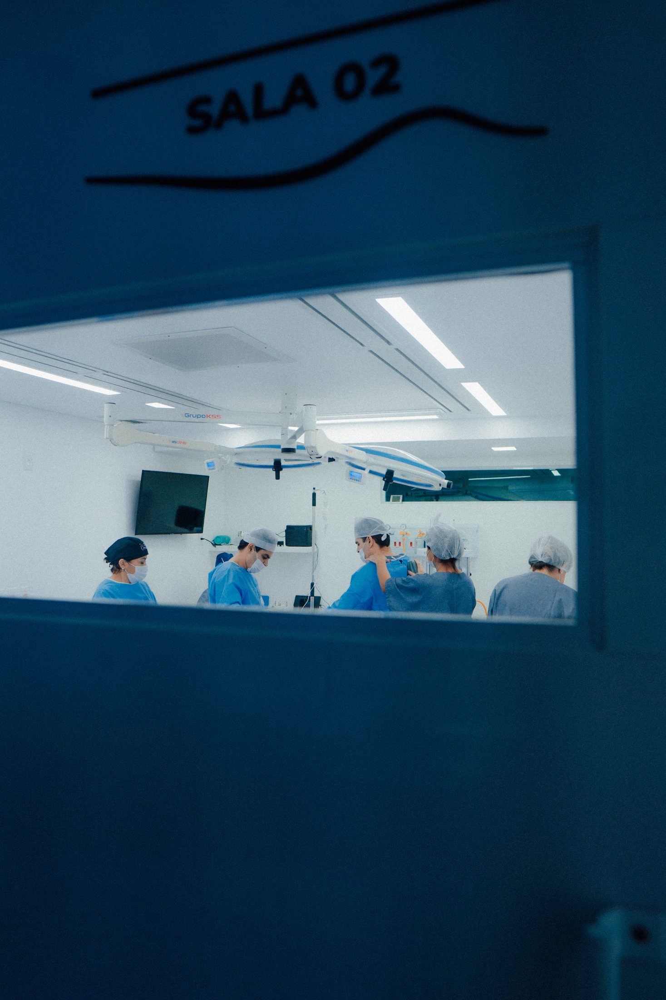
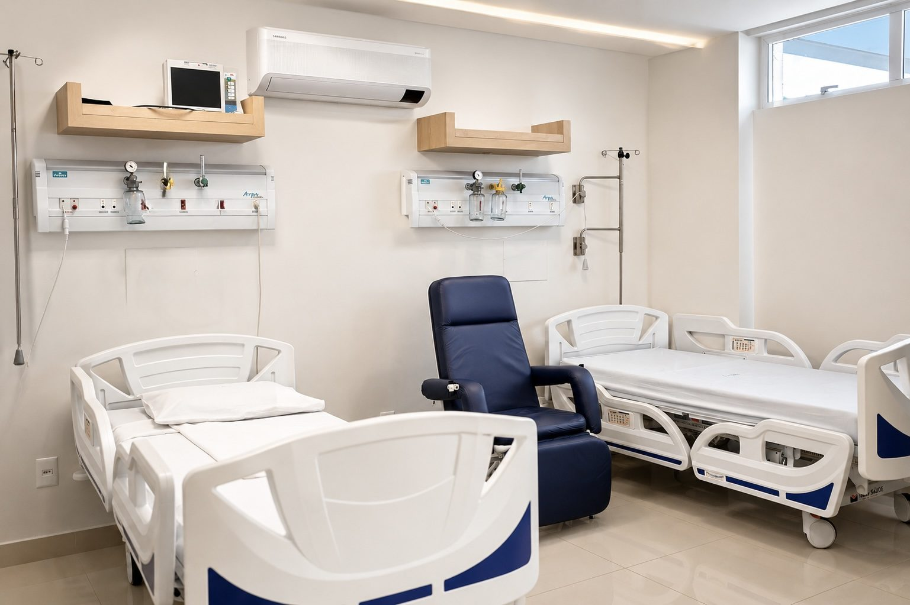

Hospital de cirurgia plástica · Campo Grande
Beleza, bem-estar e longevidade, integrados com inteligência por uma equipe multidisciplinar.
Por que um hospital
Aqui, a estrutura não é adaptada: ela foi construída para a cirurgia plástica. Do centro cirúrgico à recuperação, cada ambiente existe para uma única finalidade — cuidar de quem escolheu se transformar com segurança.
Salas equipadas dentro do próprio hospital — sem deslocamentos, sem ambientes compartilhados com outras especialidades.
Quartos privativos e atendimento humanizado para os primeiros dias — os que mais importam.
Do bloco à enfermagem, uma equipe que vive cirurgia plástica todos os dias.
Corpo clínico
Os irmãos Anache Anbar construíram, em mais de uma década de prática cirúrgica, um hospital para chamar de seu — e uma forma própria de exercer a cirurgia plástica: técnica, estudo e escuta.
Médico · CRM/MS 4999 · RQE 3691
Cirurgião Plástico · Membro da SBCP · Sócio-fundador · Professor e palestrante
Conheça o Dr. Rodrigo →
Médico · CRM/MS 5000 · RQE 3692
Cirurgião Plástico · Membro da SBCP · Sócio-fundador · Professor e palestrante
Conheça o Dr. Rafael →O hospital
Recepção, centro cirúrgico, salas de procedimento, quartos de recuperação e central de esterilização — tudo sob o mesmo teto, no mesmo padrão.

Centro cirúrgico Recepção
Recepção Quartos
QuartosProtocolo de segurança
Num hospital dedicado exclusivamente à cirurgia plástica, não circulam emergências nem doenças infecciosas. O ambiente inteiro — equipe, fluxo e esterilização — existe em função de cirurgias eletivas planejadas.
Sem pronto-socorro e sem internações de doenças infecciosas: o fluxo do hospital é 100% cirúrgico eletivo.
Central de material e esterilização dentro do próprio hospital, sob controle direto da equipe.
Avaliação criteriosa, exames e preparo individual antes de qualquer decisão cirúrgica.
Estudos publicados na literatura médica associam centros cirúrgicos dedicados a uma única especialidade a taxas menores de infecção em comparação com ambientes multiespecialidade.
Mitchell et al., Journal of Orthopaedics (2013) · Hospital for Special Surgery (2019)Todo procedimento cirúrgico envolve riscos. A avaliação individual com um cirurgião plástico é indispensável para indicar o tratamento adequado a cada caso.
Por que operar num hospital dedicado →Especialidades

Hotelaria
Os primeiros dias depois da cirurgia pedem silêncio, conforto e cuidado. Nossos quartos privativos foram pensados como suítes: enxoval, tranquilidade e uma equipe atenta a cada detalhe — para que a única preocupação seja descansar.
Conheça a hotelaria →Experiências interativas
Ferramentas ilustrativas para você explorar possibilidades antes da conversa com o cirurgião. Nenhum simulador substitui a avaliação médica — mas todos ajudam você a chegar nela com clareza.
Suavize linhas de expressão com um clique e veja a transformação em tempo real.
Experimentar → S.Explore tamanhos e formatos de prótese e visualize proporções no corpo.
Experimentar → G.Compare projeções diferentes e descubra o que conversar na sua avaliação.
Experimentar →Confiança
A confiança de nossos pacientes é construída consulta a consulta, cirurgia a cirurgia — e aparece nas avaliações espontâneas que recebemos no Google.
Ver as avaliações no Google →5,0 ★
Localização
Um dos endereços mais acessíveis e arborizados de Campo Grande — fácil de chegar, fácil de estacionar, discreto como deve ser.
Rua Alagoas, 346 — Jardim dos Estados
Campo Grande · MS · CEP 79020-120
(67) 3321-4444 · WhatsApp (67) 99883-4444
Toque para ver o mapa
Agende sua avaliação
Conte o que você deseja. Nossa equipe retorna pelo WhatsApp para agendar sua avaliação com um dos cirurgiões.